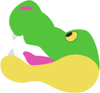

An overview on Reggi
What are reggis? Are they alligators? Where are they? We have answers to all your questions.

What are reggis? Are they alligators? Where are they? We have answers to all your questions.
Ever since the dawn of the new century, rumors have always spread of sightings of supposed otherworldly creature. This became such a common occurance that a catch all term was created for it. These impossible creatures came to be known as "cryptids." However, despite a passionate community of believers who dedicate their lives in the search of these creatures, none has been proven to exist.
Except for this one.
Rehg. Elligatoridae is the taxonomical name for what has come to be know as a "Reggie". The shorthand name Reggie was an abbreviation of the initial consonant sounds used after researchers tired of using the full name. Reggies were first discovered in the Grand Rapids sewer system, after reported sighting of a large, fuzzy alligator. First responders were suprised to find that the alligator like creature was not aggressive, and infact was just stuck. Following this odd encounter, reports of smaller reggies spread throughout the state of Michigan, usually around the edges of residential areas. The first researcher to catalogue their existance was one Samuella Weldounis, in her thesis "The Hidden Sub-Species of Metropolitan Areas.", published March 14th, 2016.
Members of this branch family first arose in the late Cretaceous, about 100–65 million years ago. Regonious of the Upper Penisula is the only known fossil, dating back to the Campanian era between 86 to 72 Mya. Following the split of Alligators and caimans in North America during the late Cretaceous, a small group of alligators was isolated by the closure of the Isthmus of Panama during the Neogene period, from about 23 to 2.58 Mya. This resulted in a divergent branch from alligators, which evolved to accomidate the regions brutal winters. This has resulted in the development of a thin, scruffy layer of fur which coats its entire body.
An average adult reggies's weight and length is 0.5 lb and 1 ft, but in rare cases sometimes grow to 6 ft long and and weigh over 3 lbs. All reggies have a prominent thin layer of coarse, fuzzy fur that coats their entire bodies. Reggies fur is usually colored but some subspecies have been noted as darker shade of green. All reggies are noted for having a yellow underside, starting from their lower jaw and ending at their tail. Their general shape and proportions are consistent with other north american alligators, but are more rounded, with far fewer jagged edges. Due to Their recent discovery, an accurate age range cannot presently be determined. It has been estimated that they can live up to 80 to 90 years.
Reggies were initially discovered in the midwest inside residental sewer systems and the outskirts of suburbs. This was typically around small nature preserves and freshwater ponds. Reggies in this environment assist plant diversity by shuffling soil allowing plant diversity. Roughly 60% of reggies still preoccupy these areas, but human exposure has resulted in the remainer relocating closer to human settlements. Initial migrations of reggies were seen as a problem at worst, or a nuisance at best.
Despite initial concerns, migrating reggies were found to be non aggressive and sociable. Of the few midwestern towns they still occupy, they are treated similarly to small creatures such as squirrels.
Copyright Reggi 2021 OC donut steal